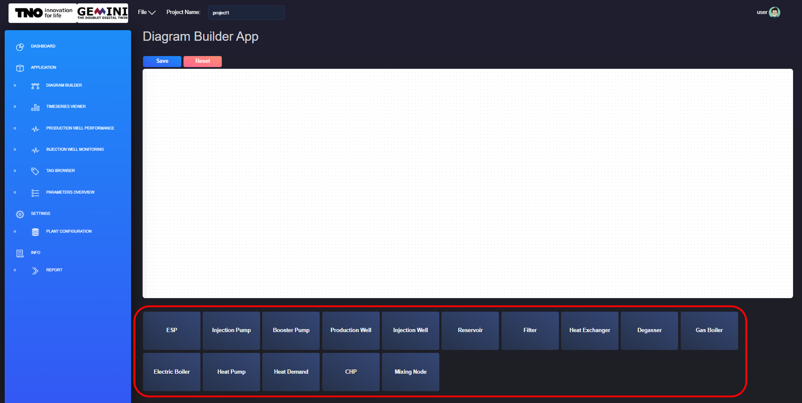
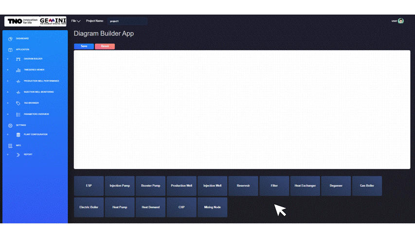
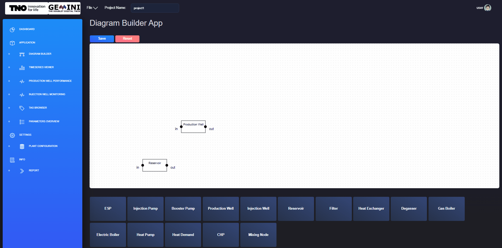
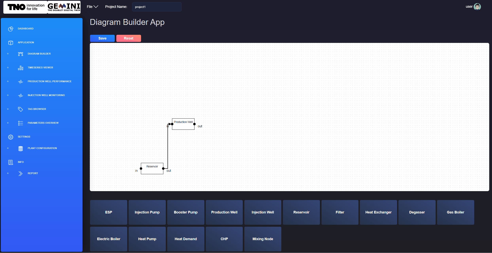
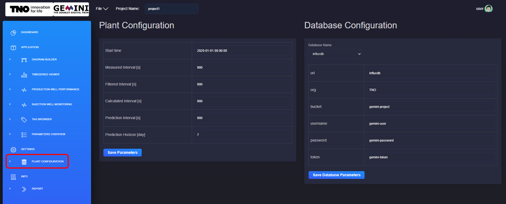
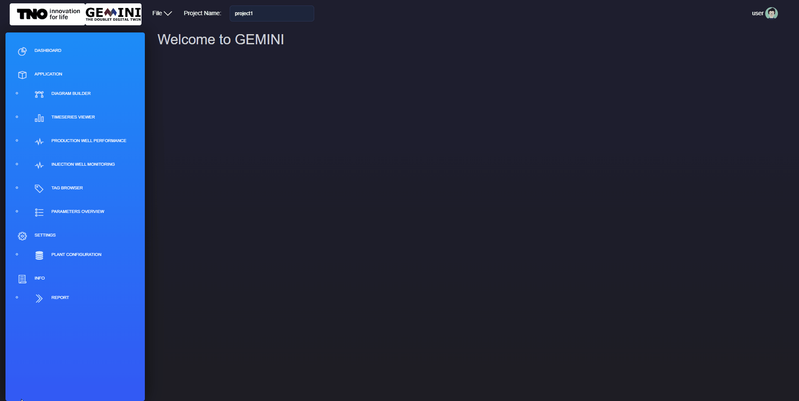

3. Set-up
This section explains how to configure a GEMINI project after creation. It covers plant diagram setup, parameter configuration, tag mapping, plant-level settings, and report/document handling.
Before starting, make sure you have created and opened a project as described in Projects.
3.1. Creating a plant diagram
After opening a project, start by defining the plant geometry in the Diagram Builder application.
{kind=link}

Fig. 3.1 Adding new component in the plant diagram from the diagram builder application.
For a new project, the canvas is empty. Add the required components by selecting them from the component list at the bottom of the screen (see Fig. 3.1).
{kind=link}

Fig. 3.2 Moving component on canvas from the diagram builder application.
When a component is added, it appears on the top-left of the canvas. Drag and drop it to the preferred location (see Fig. 3.2).
{kind=link}

Fig. 3.3 Creating a connection between two components from the diagram builder application.
Connect components to define process flow relations. Create a connection by clicking and dragging from one connection point to another, as shown in Fig. 3.3.
3.2. Adding asset parameters
After creating the diagram, define parameters for each asset through Diagram Builder.
{kind=link}

Fig. 3.4 Edit components parameters from the diagram builder application.
Right-click a component and open its parameter editor. Figure Fig. 3.4 shows an example for a production well. After editing values, click SAVE to persist changes to the project JSON files. Repeat for all relevant components.
For production and injection wells, trajectory data is required.
{kind=link}
3.4. Connect to real-time database of manual CSV upload
After assigning tags, connect the project to a real-time database or upload CSV files to get the measured data. Open the DATA MANAGEMENT application (under SETTINGS).
This first tab is Data Browser, which allows you to browse both external database (if applicable) and internal database.

Fig. 3.6 Data browser application to view the data from database
The second tab is Data Upload, which allows you to upload the data manually from a csv file and check the tag status. Before upload the csv, you need to assign the tags to the components in the diagram builder.

Fig. 3.7 Assign the tags to the components in the diagram builder
The csv file should have the following format: gemini-geothermal-suite-open/dataset/geothermal_example_dataset.csv
The csv can be uploaded by clicking the Upload button and selecting the file. After upload, you can check the tag status.

Fig. 3.8 Upload csv data to the database
3.5. Running gemini module
After the plant diagram is created, parameters are configured, and tags are linked to the database, you can run the GEMINI module to perform calculations and predictions.
This action can be started by running the script:
poetry run python src/gemini_framework/app.py
3.6. Viewing plant configuration and parameters
Use the PLANT CONFIGURATION application (under SETTINGS) to configure project-wide plant and database parameters.
- Plant settings include:
Start time
Measured Interval, in seconds
Filtered Interval, in seconds
Calculated Interval, in seconds
Prediction Interval, in seconds
Prediction Horizon, in days
- Database settings include:
Database name, from the dropdown menu
url
organisation
bucket
username
password
token
{kind=link}

Fig. 3.9 Configure the plant parameters and the database parameters from the PLANT CONFIGURATION window.
Click Save to persist configuration updates (see Fig. 3.9).
3.7. Uploading and viewing documents
The report library lets you upload and access project documents from one place. Supported uploads are PDF files, stored in your account/project context.
{kind=link}

Fig. 3.10 Upload and view pdf report from the REPORT window.
To upload a report, open INFO -> REPORT, select a local file, and click Upload. Uploaded files are available from the report dropdown. Use Delete to remove obsolete documents (see Fig. 3.10).